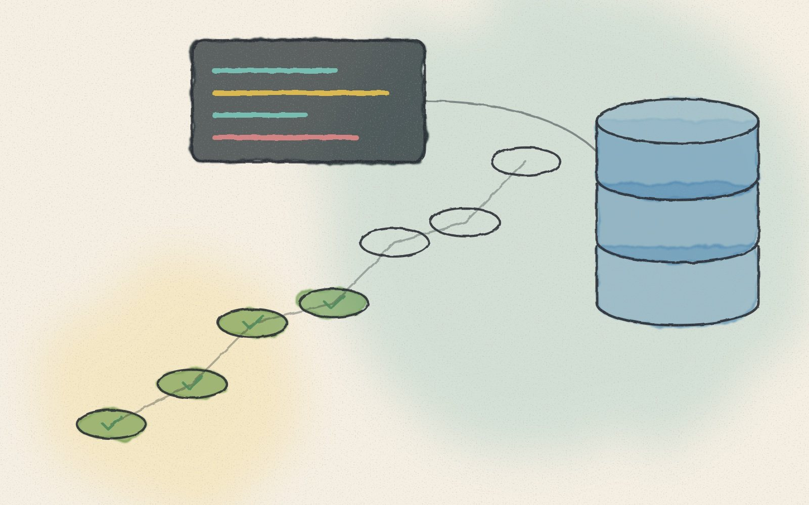

Orbit · Teaching · October 2026
Back at the keyboard, one query at a time
SQL Sprint. A seven-day SQL course I built for myself to get hands-on again, and to test how well a learning path can be tailored to one person. A real SQLite engine runs in the browser, with graded exercises.
Leading a team means I review far more queries than I write. One autumn I noticed that the window functions I used to type without thinking now made me pause. I wanted to get my hands dirty again.
I also wanted to try something I had been curious about for a while: can a course be cut to fit one learner? Not a generic tutorial, but a path built around what I already know, what I had forgotten and the time I actually had in a week.
The result is seven days, from foundations to window functions and product metrics: retention, funnels, A/B readouts and churn. Each day is a short lesson and a handful of exercises against a realistic dataset of users, subscriptions and bank transactions.
A real SQLite engine runs in the page, compiled to WebAssembly, so every example can be edited and run. Nothing is installed and nothing leaves the browser.
The part that taught me the most was the feedback. "Check answer" compares your output with the solution and tells you what is off: the row count, the order, the rounding, an accidental integer division. Being told why an answer is wrong teaches more than seeing the right one.
The last day pulls everything together in two timed sessions, forty-five minutes each, with no hints. Forty-nine graded exercises in all, plus a short quiz on concepts.
It worked on both counts. My SQL is fluent again, and building a course for a single learner showed me how much of the value is in choosing the order of things and in the quality of the feedback, not in the amount of material.
Other people asked for it, so it now also sells as an offline course.
Made with sql.js (SQLite in WebAssembly), JavaScript.

Comments
Sign in with GitHub to leave a comment or react.